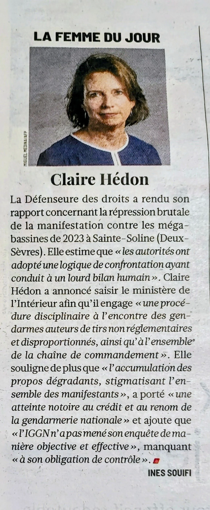

Prise de position
Merci à Claire Hédon, Défenseure des droits
Date indiquée par Facebook · 9 juillet 2026
Repères éditoriaux
Nous saluons l’action de Claire Hédon pour la défense des droits de toutes et tous. La candidature de François-Noël Buffet, alors proposée par Emmanuel Macron pour lui succéder, soulève pour nous une question de fond sur l’indépendance de cette institution.
Texte conservé avec la publication
Merci Claire HEDON, défenseure des droits.
Qu'en sera-t-il demain si François‑Noël Buffet, officiellement proposé par Emmanuel Macron pour devenir le nouveau Défenseur des droits est nommé.
Cette proposition représente un « recul pour la démocratie et un pied de nez à la société civile », estiment plusieurs organismes, parmi lesquels figurent notamment Greenpeace France, Médecins du monde, Oxfam France, le Planning familial et l’Inter-LGBT. Le parcours de François-Noël Buffet est « marqué par plusieurs prises de position contraires aux droits fondamentaux et aux valeurs que le Défenseur des droits est chargé de promouvoir ». Anti-LGBT+, anti-IVG, anti-immigration...
Ce poste appelle à défendre sans ambiguïté l’Etat de droit et les droits de toutes et de tous.
La femme du jour dans l'Humanité
Merci Claire HEDON, défenseure des droits.
Qu'en sera-t-il demain si François‑Noël Buffet, officiellement proposé par Emmanuel Macron pour devenir le nouveau Défenseur des droits est nommé.
Cette proposition représente un « recul pour la démocratie et un pied de nez à la société civile », estiment plusieurs organismes, parmi lesquels figurent notamment Greenpeace France, Médecins du monde, Oxfam France, le Planning familial et l’Inter-LGBT. Le parcours de François-Noël Buffet est « marqué par plusieurs prises de position contraires aux droits fondamentaux et aux valeurs que le Défenseur des droits est chargé de promouvoir ». Anti-LGBT+, anti-IVG, anti-immigration...
Ce poste appelle à défendre sans ambiguïté l’Etat de droit et les droits de toutes et de tous.
La femme du jour dans @[100064860845478:2048:l'Humanité]

Sources
Archive rouge · export Facebook · AR-0002-FB-00738
À lire aussi · « Cercle de silence 167 ». La vidéo du rassemblement